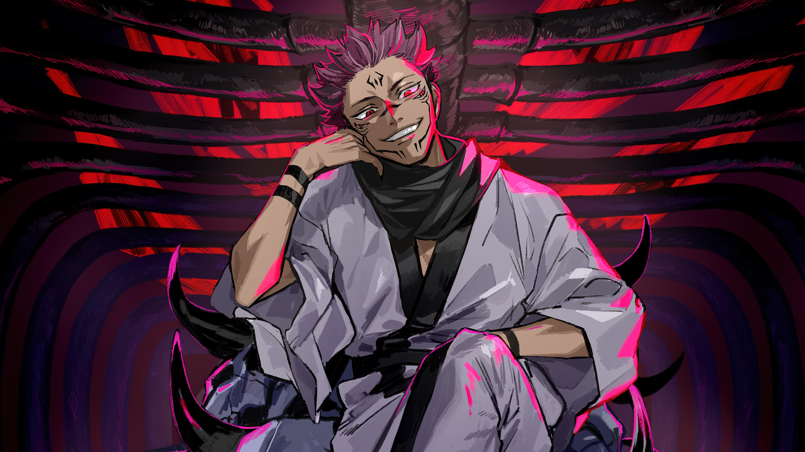
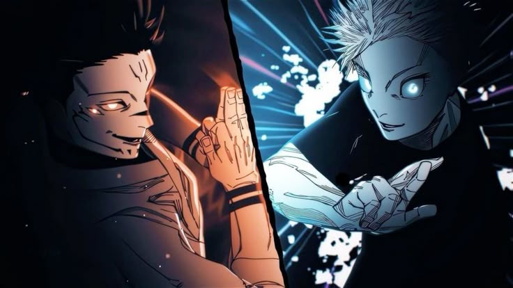

THE KING OF CURSES
A page where you know everything about Ryomen Sukuna
Ryomen Sukuna, often referred to simply as Sukuna, is one of the central antagonists in the anime and manga series Jujutsu Kaisen created by Gege Akutami. Known as the King of Curses, Sukuna is an overwhelmingly powerful and malevolent cursed spirit who once terrorized the jujutsu world over a thousand years ago.
Originally, Sukuna was a human sorcerer during the Heian era, but his immense power and cruelty made him feared by both humans and curses alike. After his death, he became a curse so strong that even the strongest sorcerers could not completely destroy him. Instead, his power was sealed into twenty indestructible cursed fingers, classified as Special Grade Cursed Objects.
When Yuji Itadori consumes one of the fingers, Sukuna is reborn inside Yuji’s body, creating a unique relationship between the two. While Sukuna usually lies dormant, he can take control of Yuji’s body when certain conditions are met, showcasing terrifying strength, speed, regeneration, and powerful cursed techniques.

HISTORY OF SUKUNA
- Ryomen Sukuna’s history begins over a thousand years ago during the Heian Era, known as the “Golden Age of Jujutsu.” Originally a human sorcerer, Sukuna possessed overwhelming strength, unmatched cruelty, and mastery over ancient cursed techniques. His power was so terrifying that people viewed him as a “Demon God,” and countless sorcerers united to defeat him—yet none succeeded. After his death, he transformed into a cursed spirit instead of passing on, and his body proved impossible to destroy. The sorcerers had no choice but to cut his remains into twenty indestructible fingers, each containing immense cursed energy, and seal them as Special Grade Cursed Objects. This marked the beginning of Sukuna’s legend as the King of Curses.
-
Sukuna’s revival occurs in the modern era when Yuji Itadori consumes one of his preserved fingers during a cursed incident. Instead of dying, Yuji becomes the only known person capable of holding Sukuna inside his body, creating a rare host–curse coexistence. Over time, Sukuna manipulates events from within Yuji, forming binding vows, seeking Megumi Fushiguro’s Ten Shadows Technique, and plotting his full reincarnation. Once he gains control over Megumi’s body, Sukuna returns in his near-complete form, unleashing chaos across Japan and challenging the strongest sorcerers—including Gojo Satoru and Yuta Okkotsu. His long history, from ancient terror to modern resurrection, makes him one of the most feared and influential beings in the entire jujutsu world.
Powers Of Sukuna
- Ryomen Sukuna possesses immense cursed energy and overwhelming physical strength, making him one of the most powerful beings in Jujutsu Kaisen. His main techniques are Cleave and Dismantle, two devastating slashing attacks capable of cutting through anything with extreme precision. He can also use powerful flame techniques like Fire Arrow, demonstrating mastery over multiple forms of cursed energy. Sukuna’s Domain Expansion, Malevolent Shrine, is one of the strongest domains, operating without a barrier and guaranteeing hits over a wide radius. He also excels in reverse cursed technique, allowing him to regenerate instantly and heal others. After taking over Megumi’s body, Sukuna gains access to the Ten Shadows Technique, further increasing his power by summoning powerful shikigami like Mahoraga. With unmatched intelligence, technique mastery, and cursed energy control, Sukuna stands as the unparalleled “King of Curses.”
- Sukuna’s powers reflect his title as the King of Curses, combining ancient jujutsu mastery with overwhelming natural strength. His slashing abilities, Cleave and Dismantle, allow him to slice through opponents and landscapes effortlessly, while his fire-based techniques show his versatility in combat. Sukuna’s Domain Expansion, Malevolent Shrine, is especially terrifying, creating a massive area where his attacks strike with unavoidable accuracy. His skill in reverse cursed technique makes him nearly impossible to kill, and his strategic mind allows him to outsmart even the strongest sorcerers. With access to Megumi’s Ten Shadows Technique, Sukuna becomes even more deadly, wielding shikigami and advanced summons with ease. Altogether, these powers make Sukuna one of the most dominant and feared figures in the jujutsu world.

SUKUNA VS MAHORAGA

-
The battle between Sukuna and Mahoraga is one of the most intense fights in Jujutsu Kaisen, showcasing the true depth of Sukuna’s power. Mahoraga, the strongest shikigami of the Ten Shadows Technique, is known for its ability to adapt to any attack it encounters. When Megumi attempts to summon Mahoraga, Sukuna steps in and decides to fight it himself, treating the battle as entertainment. Despite Mahoraga’s incredible adaptability and strength, Sukuna overwhelms it with his speed, precision, and mastery over cursed techniques. He ultimately destroys Mahoraga using his devastating Fire Arrow technique, a rare and powerful ability that Mahoraga cannot adapt to in time. This fight proves not only Sukuna’s overwhelming dominance but also his understanding of sorcery far beyond any modern jujutsu user.
-
Sukuna’s fight against Mahoraga stands out as a turning point that reveals just how terrifying he truly is. Mahoraga’s ability to continuously adapt made it a threat even Sukuna took seriously, unlike most opponents he mocks or ignores. Throughout the fight, Sukuna studies Mahoraga’s movements, testing its limits while keeping the city around them under his control using Malevolent Shrine. Even as Mahoraga adapts to his slashes and counters with overwhelming force, Sukuna stays calm, showing his confidence and superior technique. In the end, Sukuna’s strategic use of the powerful flame technique “Fuga” completely overwhelms Mahoraga, proving that even the strongest shikigami cannot match the King of Curses.
Click here to watch full fight
SUKUNA VS GOJO
-
The battle between Sukuna and Satoru Gojo is the most anticipated and powerful clash in Jujutsu Kaisen, bringing together the King of Curses and the strongest modern sorcerer. Gojo enters the fight with complete confidence in his Limitless and Infinity techniques, using his exceptional mastery over domain expansions, Hollow Purple, and reverse cursed energy. Sukuna, on the other hand, relies on his overwhelming cursed energy, slashing attacks like Cleave and Dismantle, and the strategic use of the Ten Shadows Technique through Megumi’s body. Their domains—Unlimited Void and Malevolent Shrine—collide repeatedly, creating a battle that pushes the limits of jujutsu itself. Every exchange demonstrates both fighters’ incredible speed, intelligence, and adaptability.
-
As the fight progresses, both Sukuna and Gojo take significant damage, showing that even the strongest can be pushed to their limits. Sukuna uses Mahoraga’s adaptation to counter Gojo’s hax-like Infinity, gradually learning how to damage him directly. Gojo manages to land multiple decisive blows and even splits Sukuna in half with a powerful Hollow Purple, proving why he is called the Honored One. However, Mahoraga’s adaptation eventually gives Sukuna the advantage, allowing him to bypass Infinity completely. In the end, Sukuna delivers the final strike, securing victory but acknowledging Gojo as the only opponent who truly challenged him. Their battle becomes a legendary moment in the jujutsu world, symbolizing the clash of ancient power versus modern perfection.

SUKUNA FINAL FIGHT

-
Sukuna’s final fight is the largest and most intense battle in Jujutsu Kaisen, bringing together almost every remaining top sorcerer to defeat the King of Curses once and for all. After his victory over Gojo, Sukuna continues rampaging through the battlefield with overwhelming strength, using Cleave, Dismantle, and the Ten Shadows Technique to crush anyone who stands in his way. Yuta Okkotsu, Maki Zenin, Choso, and many others take turns fighting him, pushing Sukuna harder than ever before. The battle becomes even more dramatic when Yuji Itadori enters the fight with newfound control over his soul-based techniques, finally being able to damage Sukuna from the inside—something no one else could do.
-
As the fight reaches its climax, Yuta and Yuji work together to weaken Sukuna by targeting the soul of Megumi, who is trapped inside Sukuna’s body. By breaking Sukuna’s connection to Megumi, the sorcerers remove the source of several of Sukuna’s advantages, forcing him into a vulnerable state for the first time. In this weakened moment, Yuji lands powerful, decisive attacks fueled by his determination to save Megumi and end Sukuna’s reign. With the final coordinated assault, Sukuna is ultimately defeated, marking the end of a thousand-year curse and the greatest threat the jujutsu world has ever faced. This battle represents the victory of human willpower over ancient evil, closing Sukuna’s long and terrifying chapter.
Contact info
Email:sanjay070707070707@gmail.com
ARIGATOU